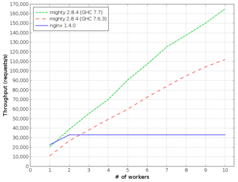
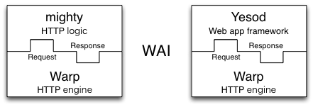
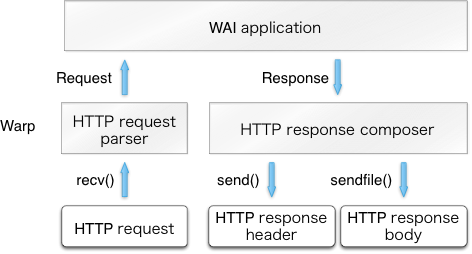
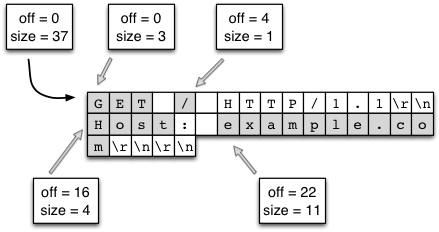

Functional Programming: Real World Performance, Nix and Warp Server
Table of Contents
- 1. How Familiar is everyone with FP
-
2. What is the problem?
- 2.1. What is the problem?
- 2.2. Some modern day package management systems
- 2.3. What about sub ecosystems?
- 2.4. How to make a package manager?
- 2.5. How to make a package manager?
- 2.6. Problems with modern package management
- 2.7. Why imperative is bad? What is so imperative about installing packages?
-
2.8. Are you familiar with
DEPENDENCY HELL? - 2.9. All types of “DEPENDENCY HELL”
- 2.10. Not Atomic 01
- 2.11. Not Atomic 02
- 2.12. Whats bad about imperative summary?
- 3. What it should/could/would have been?
- 4. How does nix actually work?
- 5. Nix as infrastructure (imagination)
- 6. references
- 7. Part 2 Warp optimization
1How Familiar is everyone with FP
1.1Disclaimer, not an expert
- Logical fallacies will be used, not too fond of this but ¯\ (ツ)_/¯.
- Linux user for 7 years now
- Ubuntu
- Proxmox
- ArchLinux
- Centos (server management)
1.2Choose some project
1.3Goals
- Functional Programming Principles(not only languages)
- Academic mental exercise (hope not too boring):D
- not nessasarily useful
- exposure to a what if?world
- No free lunch theorem
- PS: you get some free snacks with FP
- confidence
1.4For whom is this talk for?
- A rare case where FP’s abilities can be shown
- State management
- DevOps
- Images, Docker, VM, Clusters
- give you a feel of
Nix
1.5slant.co’s opinions

1.6Really?
1.7Functional Programming Primer
- purity no side effects
- whats the point of a program if it cannot change any value?
- everything is immutable
- \(x = 1; x = 2\)
- lazy
- memoize everything
- extreme composability
- keep as much information in the program as
possible
- i.e. not a lot of reduce operations
2What is the problem?
- Modern smart phones vs old phones
- What OS has everyone used?
- windows
- ubuntu/mac apt-get brew
2.1What is the problem?
- multiple versions
- mutability
- mysql-python
- not accurate dependency graph
- dependency hell
2.2Some modern day package management systems
| Package manager | Distributions |
|---|---|
| apt, apt-get | Debian, Ubuntu |
| rpm, yum | Redhat, Centos |
| pacman | ArchLinux |
| brew | MacOS |
2.3What about sub ecosystems?
| Package manager | ??? |
|---|---|
| pip, virtualenv, pipenv | Python2,3(???) |
| npm, yarn | Nodejs |
| cabal, stack, hackage | Haskell :) |
| go? | go? |
| brew | MacOS |
| use-package, vim, fish, zsh | … |
2.4How to make a package manager?
- What are the basic parts that we need?
2.5How to make a package manager?
| build dependencies | What do I need to build the program? |
| runtime dependencies | What
.soshared objects do I need? |
| configurations | What in
/etc/...config files |
- essentially think of it as a graph, whenever we upgrade or install a package, we are mutating a node on this graph to point to something else.
2.5.1real senario
pkgname=pacman pkgver=5.1.0 _pkgver=1.0.0 pkgrel= 2 pkgdesc= "A library-based package manager with dependency support" arch= ( 'i686' 'x86_64' ) url= "http://www.archlinux.org/pacman/" license= ( 'GPL' ) groups= ( 'base' 'base-devel' ) depends= ( 'bash>=4.2.042-2' 'glibc>=2.17-2' 'libarchive>=3.1.2' ' curl >=7.39.0' 'gpgme' 'archlinux-keyring' 'manjaro-keyring' 'pacman-mirrors>=4.1.0' ) checkdepends= ( 'python2' 'fakechroot' ) makedepends= ( 'asciidoc' 'pacman>=5.1' ) optdepends= ( 'haveged: for pacman-init.service' ) provides= ( 'pacman-contrib' 'pacman-init' ) conflicts= ( 'pacman-contrib' 'pacman-init' ) replaces= ( 'pacman-contrib' 'pacman-init' ) backup= (etc/pacman.conf etc/makepkg.conf ) install=pacman.install options= ( 'strip' 'debug' )
2.6Problems with modern package management

2.7Why imperative is bad? What is so imperative about installing packages?
Mutation
2.8Are you familiar
with
DEPENDENCY HELL?
2.9All types of “DEPENDENCY HELL”

- { DLL, dependency, npm, cabal } hell, different names for the same demon
- conflicting dependency
- shared components like library links
cuda.7.sovscuda.6.so
- shared components like library links
- multiple version side by side and roll backs
- possible solutions
- set of stable packages like
Debianorhaskell stack snapshots
- set of stable packages like
2.10Not Atomic 01
- kill upgrades half way
- packages left in a semi updated state
- sometimes need to manually remove lock files
COMMAND PID USER FD TYPE DEVICE SIZE/OFF NODE NAME dpkg 29329 root 3uW REG 8,7 0 262367 /var/lib/dpkg/lock
2.11Not Atomic 02
- can be fixed but kinda troublesome.

2.12Whats bad about imperative summary?
- No Variability
- cannot point to older versions of the same thing
- Dependency hell
- conflicting dependencies
- Not atomic upgrades
- unknown state if break half way
These problems are really similar to the problems
with imperative languages! like
JAVAand people have already made solutions
for them like how
Haskelldoes. We could learn a thing or two
from them.
3What it should/could/would have been?
- Imagine now that we implemented all the things of a functional programming language to create a functional package management system?
- What can we do with this?
3.1GUIX vs Nix


3.2Introducing Nix Package Management
- solves all of the problems above
- Can point to different versions of the same
thing
- cannot point to older versions of the same thing
- Dependency hell
- Not atomic upgrades
- unknown state if break half way
- Can point to different versions of the same
thing
3.3Main mechanism
- install everything in path
/nix/store/{hash}-name - via
symlinking
3.4What you get for free with this mechanism?
- no
sudo - easy revert and roll back
- select specific version
- 2 different version can run at the same time
- same
developmentenvironment as the
runtimeenvironment!
- nix-shell
3.4.1no
sudo, where is my
sudo?
- linux was developed as a
time sharingsystem - many users were expected to share a single computer.
- thus to manage conflicts, a
super user,rootwas required to install and manage packages
nix-env -iA nixos.figlet
3.4.2easy revert, rollback
figlet
"I am here!"
nix-env --rollback
figlet
"are you still here?"
3.4.3Select specific version
cd ~/projects/nix-config/
git checkout ??
nix-env -f ~/projects/nix-config/ -iA screenfetch
screenfetch 2016 vs current
3.4.4Installing and running 2 version of same software
stack --version
su
stack --version
3.4.5Same development environment and runtime environment
- I am not an electrical engineer or something
but I program my own keyboard. So I need some sort
of firmware flasher. like
dfuprogrammerI dont need it on my system.
cd ~/projects/qmk_firmware/
make
dfuprogrammer
nix-shell
make
dfuprogrammer
3.5Going all the way, NixOS
- whole system management via Nix and thus NixOS
- Version controlled operating system
- show OS reboot
- I wanted to show my generations so had been delaying removing my older generations
df -h /
nix-collect-garbage --delete-older-than
10
--dry-run
3.5.1NixOS
- show file:///home/df/nix-config/configuration.nix
- python package management file:///home/df/nix-config/configuration.nix
- gnupg agent file:///home/df/nix-config/configuration.nix
- ports
file:///home/df/nix-config/configuration.nix
- I think it helps me get a state of all the ports in one place
- users and security all in one place
file:///home/df/nix-config/configuration.nix
- authorisedkeys
- postgresql can be packaged in
shell.nixfile:///home/df/nix-config/configuration.nix- separate project called
nixos-shellhttps://github.com/chrisfarms/nixos-shell
- separate project called
- filesystems file:///etc/nixos/hardware-configuration.nix
3.5.2docker
https://nixos.wiki/wiki/Docker
virtualisation.docker.enable =
true;
users.users.
<myuser>.
extraGroups = [
"docker" ];
nix-build
'<nixpkgs>' -A
dockerTools.examples.redis
docker load < result
https://github.com/NixOS/nixpkgs/blob/master/pkgs/build-support/docker/examples.nix
3.5.3easy cd/dvd
cd ~/projects/nixpkgs
nix-build -A config.system.build.isoImage -I
nixos-config=modules/installe
r/cd-dvd/installation-cd-minimal.nix default.nix
3.5.4easy vm
cd ./nixops
nixops create -d simple02 network.nix
nixops deploy -d simple02
deployment.targetEnv =
"ec2";
deployment.region =
"eu-west-1";
4How does nix actually work?
4.1Nix expressions
- functional expressions, not general purpose please do not program things with it
- comes with its own BNF grammar

4.2Language features
- Nix expressions
- dynamically typed
- lazy
- pure
4.3The main point
- Nix expressions are here to describe a graph of
build actions called
derivations- build script
- set of environment variables
- set of dependencies
4.4Example: Xmonad

4.5Example: Xmonad

4.6Main mechanism

5Nix as infrastructure (imagination)
- how might one use nix in
JPMC'sinfrastructure?
5.1Main componenets
- Hydra caching
- Dependency management
- Ease of use
- nix-shell
- Security
5.2Caching build farm or cachix


6references
- [HTML] Nix: A Safe and Policy-Free System for
Software Deployment.
- E Dolstra, M De Jonge, E Visser - usenix.org
- https://nixos.org/~eelco/pubs/nspfssd-lisa2004-final.pdf
- [PDF] A Purely Functional Linux Distribution - NixOS
- Hydra - NixOS
7Part 2 Warp optimization
7.12013 Results

7.2Overall Architecture

7.3Type and life cycle
type Application = Request -> ResourceT IO Response

7.4Threads
user threads
7.5As little syscalls as possible
- use strace to check what nginx was doing
- found
accept4
7.6Profiling
- the date string format is taking up most of the cpu time
- so they made a cache for that
- btw haskell by default memoised every thing
7.7Avoiding locks
they used compare and swap instead
7.8Using proper datastructure
-
Stringin haskell is actually aListofChar-
Listas inLinked-lists
-
-
ByteStringso you can dosplicinglikeGO.- implemented in low level
C
- implemented in low level
- Handroll several components to avoid overhead like the parsing library
7.9ByteString splicing
Everything in haskell by default is immutable so multiple threads can read it at the same time with no issues.
Updates are done with compare and swap.
